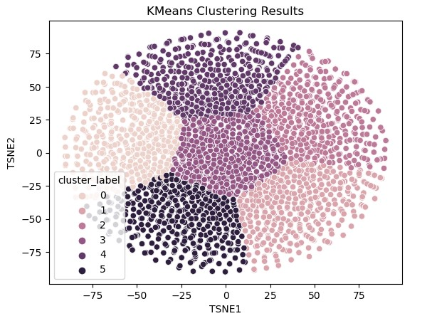

Segmentation des clients d'un site e-commerce

Classification automatique des biens de consommation

Modèle de scoring pour la gestion du risque crédit

Déployez un Modèle dans le Cloud

J'ai analysé les comportements d'achat de 100 000 clients d'Olist pour créer une segmentation précise. Cette solution vise à optimiser les campagnes marketing futures, avec des objectifs d'augmentation de 30% du taux d'engagement et de 25% des ventes dans les six mois.
Outils utilisés
- **Clustering :** K-means et DBSCAN pour identifier des segments distincts
- **Visualisation :** Matplotlib et Seaborn pour une présentation intuitive
- **Prétraitement :** Standardisation des données et PCA pour la réduction de dimensionnalité
- **Analyse :** Analyse des clusters pour des insights exploitables

J'ai développé un moteur de classification pour "Place de marché" qui a classé plus de 1050 produits avec une précision de 95%. Cette solution a réduit de 50% le temps nécessaire à la catégorisation manuelle, optimisant ainsi la gestion des produits et les recommandations.
Outils et techniques utilisés
- **Textes :** Bag-of-Words, Word2Vec, BERT, et USE pour l'extraction et l'analyse des descriptions textuelles
- **Images :** SIFT pour la détection des caractéristiques clés, Transfer Learning avec des réseaux de neurones pré-entraînés comme VGG16 ou ResNet pour l'extraction des informations visuelles
Ces outils et techniques permettent une classification automatique précise des produits, améliorant l'efficacité de la plateforme.
Pour "Prêt à Dépenser", j'ai mis en place un modèle de scoring avancé qui a réduit de 15% le taux de défaut de paiement en un an et développé un dashboard interactif permettant de réduire de 40% le temps de traitement des demandes de prêts pour plus de 500 gestionnaires de crédits. Ce projet vise à améliorer la précision des décisions de crédit tout en augmentant la transparence et l'efficacité du processus d'octroi.
Outils Utilisés
- **Modélisation :** Python, scikit-learn (création et évaluation du modèle), GridSearchCV (optimisation des hyperparamètres)
- **Dashboard :** Streamlit pour la visualisation interactive
- **Déploiement :** Flask, Docker
- **MLOps :** MLFlow (tracking des expérimentations), Evidently (détection du Data Drift)
Pour le projet "Fruits!", j'ai déployé une infrastructure Big Data sur AWS EMR avec Pyspark, permettant de traiter plus de 1 million d'images de fruits par mois. Cette solution a réduit le temps de traitement de 70% et les coûts opérationnels de 20%, en visant à créer une infrastructure scalable et performante pour le traitement d'images à grande échelle.
Outils et techniques utilisés
- **Infrastructure :** AWS EMR pour la gestion des ressources Big Data
- **Traitement de données :** Pyspark pour le traitement distribué des images